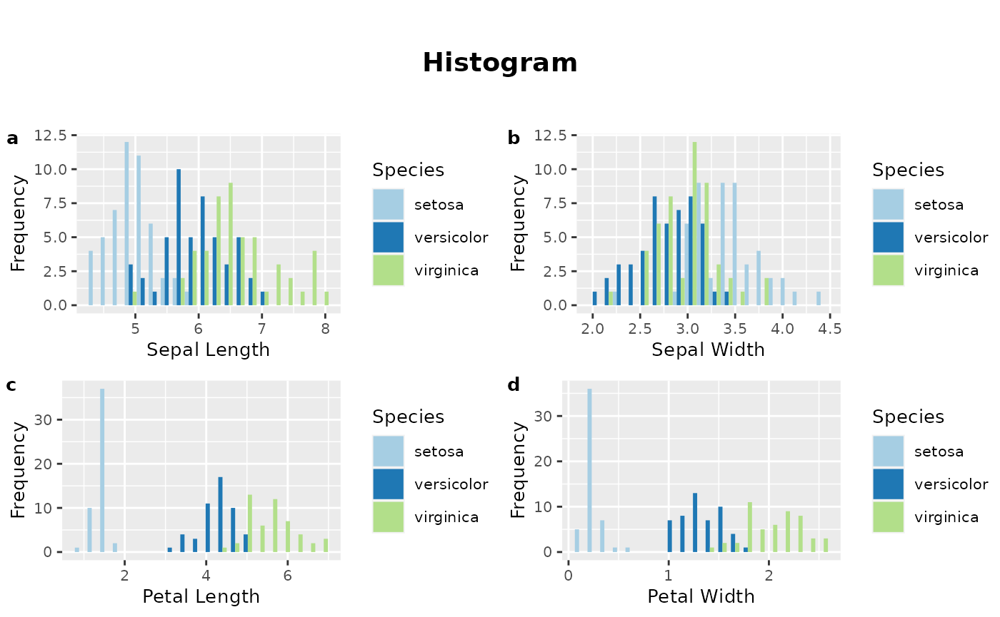

Introduction to group03package
group03package-vignette.Rmd
library(group03package)When building a knn model, there are a few steps that you must go through: * Load the dataset of interest * Perform EDA to gain an overview of the data (through numeric summaries as well as visualizations) * Clean the dataset so that attributes are in appropriate types for model building * Build the actual model
Data
We will first use the dataset iris for this tutorial. We will skip
over the load_data() function in this package as it’s used
to specific datasets that require more cleaning to parse. For reference,
we can use load_data() with other datasets such as follow:
load_data(readr::readr_example("mini-gapminder-asia.csv"))
#> # A tibble: 6 × 5
#> country year lifeExp pop gdpPercap
#> <fct> <dbl> <dbl> <dbl> <dbl>
#> 1 Afghanistan 1952 28.8 8425333 779.
#> 2 Bahrain 1952 50.9 120447 9867.
#> 3 Bangladesh 1952 37.5 46886859 684.
#> 4 Cambodia 1952 39.4 4693836 368.
#> 5 China 1952 44 556263527 400.
#> 6 Hong Kong, China 1952 61.0 2125900 3054.Now we will load the iris dataset that will be used to demo other functions.
head(iris)
#> Sepal.Length Sepal.Width Petal.Length Petal.Width Species
#> 1 5.1 3.5 1.4 0.2 setosa
#> 2 4.9 3.0 1.4 0.2 setosa
#> 3 4.7 3.2 1.3 0.2 setosa
#> 4 4.6 3.1 1.5 0.2 setosa
#> 5 5.0 3.6 1.4 0.2 setosa
#> 6 5.4 3.9 1.7 0.4 setosaEDA
Means of numeric values with avg_numeric()
To study the numeric attributes of the dataset, grouped by a
categorical attribute of interest, such as the species, we can use the
function avg_numeric().
avg_numeric(iris,Species)
#> Species Sepal.Length Sepal.Width Petal.Length Petal.Width
#> 1 setosa 5.006 3.428 1.462 0.246
#> 2 versicolor 5.936 2.770 4.260 1.326
#> 3 virginica 6.588 2.974 5.552 2.026The function output the mean for the numeric attributes such as sepal length or sepal width for each of the iris species we have.
Plotting histograms with plot_hist()
We can also visualize the distribution of the numerical attributes by
using the plot_hist() function. The histogram will also be
grouped by the Species to visualize the differences or similaries
between each the distribution for each category. We will now plot the
histogram for the species to see how many observations of each species
we have in the dataset.
plot_hist(iris, Species, title = "Histogram") ## Data cleaning If certain attributes are categorical while we want to fit a knn model using those attributes, we may have to encode the categories of that attribute into numerical values or any value appropriate for the model. Since this dataset does not have any attribute that need to be encoded, we’ll substitute the “setosa” species by “replaced_Setosa” just for the purpose of demonstration.
sub_values(iris, Species, 'replaced_Setosa', 'setosa')
#> [1] replaced_Setosa replaced_Setosa replaced_Setosa replaced_Setosa
#> [5] replaced_Setosa replaced_Setosa replaced_Setosa replaced_Setosa
#> [9] replaced_Setosa replaced_Setosa replaced_Setosa replaced_Setosa
#> [13] replaced_Setosa replaced_Setosa replaced_Setosa replaced_Setosa
#> [17] replaced_Setosa replaced_Setosa replaced_Setosa replaced_Setosa
#> [21] replaced_Setosa replaced_Setosa replaced_Setosa replaced_Setosa
#> [25] replaced_Setosa replaced_Setosa replaced_Setosa replaced_Setosa
#> [29] replaced_Setosa replaced_Setosa replaced_Setosa replaced_Setosa
#> [33] replaced_Setosa replaced_Setosa replaced_Setosa replaced_Setosa
#> [37] replaced_Setosa replaced_Setosa replaced_Setosa replaced_Setosa
#> [41] replaced_Setosa replaced_Setosa replaced_Setosa replaced_Setosa
#> [45] replaced_Setosa replaced_Setosa replaced_Setosa replaced_Setosa
#> [49] replaced_Setosa replaced_Setosa versicolor versicolor
#> [53] versicolor versicolor versicolor versicolor
#> [57] versicolor versicolor versicolor versicolor
#> [61] versicolor versicolor versicolor versicolor
#> [65] versicolor versicolor versicolor versicolor
#> [69] versicolor versicolor versicolor versicolor
#> [73] versicolor versicolor versicolor versicolor
#> [77] versicolor versicolor versicolor versicolor
#> [81] versicolor versicolor versicolor versicolor
#> [85] versicolor versicolor versicolor versicolor
#> [89] versicolor versicolor versicolor versicolor
#> [93] versicolor versicolor versicolor versicolor
#> [97] versicolor versicolor versicolor versicolor
#> [101] virginica virginica virginica virginica
#> [105] virginica virginica virginica virginica
#> [109] virginica virginica virginica virginica
#> [113] virginica virginica virginica virginica
#> [117] virginica virginica virginica virginica
#> [121] virginica virginica virginica virginica
#> [125] virginica virginica virginica virginica
#> [129] virginica virginica virginica virginica
#> [133] virginica virginica virginica virginica
#> [137] virginica virginica virginica virginica
#> [141] virginica virginica virginica virginica
#> [145] virginica virginica virginica virginica
#> [149] virginica virginica
#> Levels: replaced_Setosa versicolor virginicaKNN Model
We’ll now move on to the last step which is building our model. We want to predict the species based on all other numeric attributes.
recipe <- recipes::recipe(Species ~ ., data = iris)We will build the model with the specified number of neighbors k = 10. However, you can also choose to build the model with cross validation and pass on a grid of values for model optimization, from which you can pick the most optimal k.
build_model(iris, recipe, "Yes", k = 10)
#> ══ Workflow [trained] ══════════════════════════════════════════════════════════
#> Preprocessor: Recipe
#> Model: nearest_neighbor()
#>
#> ── Preprocessor ────────────────────────────────────────────────────────────────
#> 0 Recipe Steps
#>
#> ── Model ───────────────────────────────────────────────────────────────────────
#>
#> Call:
#> kknn::train.kknn(formula = ..y ~ ., data = data, ks = min_rows(10, data, 5), kernel = ~"rectangular")
#>
#> Type of response variable: nominal
#> Minimal misclassification: 0.04666667
#> Best kernel: rectangular
#> Best k: 10Conclusion
From the model, you can choose to scale the attributes, to perform cross validation or parameter optimization. You can also use the model on your test set and check for the accuracy and other metrics. Our package provides a shortened way to build the model of the same nature as our project analysis. You can refer to our project to see how the functions are used in the actual analysis.